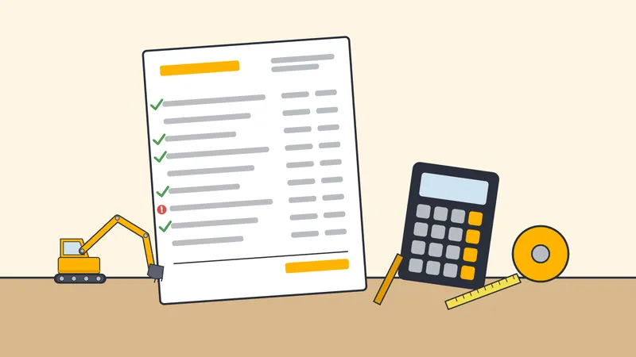

Devis de terrassement 2027 : le lire ligne par ligne et le comparer

Un bon devis de terrassement identifie l'entreprise et son assureur décennal, puis chiffre chaque poste avec une quantité, une unité et un prix unitaire HT : installation, implantation, décapage, déblais en m³ en place, évacuation, remblai, compactage. Il fixe d'avance le prix des aléas (rocher, eau, réseaux) et précise la TVA, la durée de validité, l'acompte et les conditions de paiement. Pour recevoir le vôtre : notre page devis gratuit.
| Élément | Pourquoi | Exemple |
|---|---|---|
| Raison sociale, adresse, SIRET | Savoir qui s'engage | SOPHIE TERRASSEMENT PROVENCE, SIRET 994 240 588 00016 |
| Assurance décennale : assureur et zone couverte | Mention obligatoire, recours pendant dix ans | SMA SA (groupe SMABTP), France métropolitaine |
| Date et durée de validité | Les prix bougent | Valable deux mois |
| Quantité, unité, prix unitaire HT par poste | Comparer et contrôler | 48 m³ en place × 30 € = 1 440 € |
| Base des volumes, destination des déblais | Le foisonnement grossit le transport | 62,4 m³ foisonnés vers une ISDI à moins de 10 km |
| Prix des aléas | Pas d'avenant dans l'urgence | Rocher : plus-value de 40 €/m³ en place |
| Taux de TVA et total TTC | 20, 10 ou 5,5 % selon le chantier | TVA à 20 %, maison neuve |
| Délais, acompte, échéancier | Ne pas payer d'avance | 30 % à la commande, solde à la réception |
Quelles mentions obligatoires sur un devis de terrassement ?
Un devis de terrassement doit dire qui s'engage, sur quel chantier, pour quel prix et à quelles conditions. Si une mention manque, demandez-la avant de signer.
Identité de l'entreprise et assurance décennale
En tête : raison sociale, forme juridique, adresse, SIRET, numéro de TVA intracommunautaire, puis l'adresse du chantier. Une entreprise soumise à l'assurance décennale doit aussi indiquer sur ses devis et factures l'assurance souscrite, les coordonnées de l'assureur et la couverture géographique du contrat. Cette assurance répare, pendant dix ans après la réception, les défauts qui compromettent la solidité de l'ouvrage ou le rendent impropre à sa destination ; demandez l'attestation. Exemple réel : l'assureur de STP Terrassement est SMA SA (groupe SMABTP), couverture France métropolitaine (voir qui sommes-nous).
Validité, délais, paiement et acompte
Le devis est daté et donne sa durée de validité, souvent un à trois mois. Pour un particulier, il affiche le prix TTC, la date de démarrage ou le délai d'exécution, et les conditions de paiement, acompte compris. Il dit s'il est gratuit, et l'entreprise doit vous indiquer son médiateur de la consommation. Signé chez vous, le contrat ouvre en principe 14 jours de rétractation.
TVA à 20, 10 ou 5,5 % : quel taux pour une maison ?
Le taux dépend de l'ouvrage : 20 % pour une maison neuve, 10 % pour des travaux sur un logement de plus de deux ans, 5,5 % pour la seule rénovation énergétique éligible.
- 20 % : construction neuve, logement de moins de deux ans, ou travaux qui produisent un bâtiment neuf, comme une extension augmentant la surface de plancher de plus de 10 %.
- 10 % : amélioration, transformation, aménagement ou entretien d'un logement achevé depuis plus de deux ans, comme son raccordement au tout-à-l'égout.
- 5,5 % : rénovation énergétique de ce logement et travaux indissociablement liés ; rare en terrassement.
Pour un taux réduit, vous attestez que le logement remplit les conditions.
Les lignes techniques du devis, poste par poste
Chaque ligne dit ce qui est fait, en quelle quantité, à quel prix unitaire ; prix HT de notre grille de tarifs 2027.
Installation de chantier
Amenée et repli des engins, balisage : un forfait compté une seule fois, de l'ordre de 350 à 600 € pour une maison (prix indicatif).
Implantation
Report sur le terrain des points et niveaux du plan : 300 à 700 € (prix indicatif). Vérifiez qui fournit le niveau de référence.
Décapage de la terre végétale
Retirer 15 à 25 cm de terre végétale coûte 3 à 6 €/m², terre mise de côté sur le terrain ; l'évacuer ajoute 5 à 11 €/m². Le devis donne épaisseur et destination (voir le décapage de terre végétale).
Déblais : m³ en place ou m³ foisonné
Les déblais se chiffrent au m³ en place, mesuré dans le sol avant creusement : 25 à 40 €/m³ en sol meuble sur terrain plat, 35 à 55 €/m³ en pente, 50 à 90 €/m³ en rocher. Extraite, la terre gonfle : c'est le foisonnement, coefficient 1,10 (sable) à 1,50 (roche). Le m³ foisonné sert au transport, jamais à l'excavation (voir comment calculer le volume de terrassement).
Évacuation : distance, ISDI et prix au m³
Les terres inertes partent en ISDI (installation de stockage de déchets inertes) : 25 à 35 €/m³ à moins de 10 km, 30 à 45 €/m³ jusqu'à 25 km, 40 à 60 €/m³ au-delà, chargement, transport et ISDI compris. Le devis précise la base de volume, la destination et ce que couvre le prix ; exigez le bordereau de suivi des déchets (voir le prix de l'évacuation).
Remblai
Réemployer les déblais sains du chantier est le plus économique. En apport fourni-livré : terre saine 15 à 35 €/m³, tout-venant 0/80 20 à 40 €/m³, grave concassée 0/31,5 28 à 50 €/m³, plus 10 à 25 €/m³ de mise en œuvre et compactage. Commandez 15 à 25 % de plus pour le tassement, et jamais de terre sous une dalle (voir le prix du remblai).
Compactage
Fond de forme puis couches de 20 à 30 cm, au rouleau ou à la plaque vibrante ; sinon, le remblai peut se tasser de 10 à 20 %. Le devis dit combien de couches, avec quel engin et quel contrôle. Le réglage de surface coûte 3 à 8 €/m².
Géotextile et GNT
Sur sol argileux ou humide, un géotextile (2 à 5 €/m²) sépare le sol en place de la couche de forme en GNT, la grave non traitée, souvent en 0/31,5. Vérifiez l'épaisseur : « 20 cm compactés » n'est pas « 20 cm livrés ».
Rocher, eau, réseaux : comment le devis traite-t-il les aléas ?
Un devis sérieux ne promet pas l'absence d'aléas : il fixe d'avance leur prix unitaire et leur mode de constat.
- Le rocher. Fréquent sur les coteaux calcaires du pays d'Aix. La plus-value s'écrit au m³ en place ou à l'heure de brise-roche (80 à 110 €/h avec chauffeur), quantité constatée ensemble ; une étude de sol G1 ou G2 réduit l'incertitude.
- L'eau. Venue d'eau ou nappe en fond de fouille : demandez le prix du pompage et ce qui le déclenche.
- Les réseaux non repérés. Les déclarations DT et DICT interrogent les exploitants avant de creuser, mais ignorent les réseaux privés (arrosage, câble de portail) : signalez-les.
Accès réservé à une mini-pelle, terres refusées en ISDI : même règle, un prix unitaire écrit plutôt que « à définir ».
Que chiffrer au m³, au m², au mètre linéaire ou au forfait ?
L'unité suit le travail : au m³ ce qui se creuse, se transporte ou s'apporte, au m² ce qui se traite en surface, au forfait ce qui ne dépend pas des quantités.
- Au m³ : déblais (en place), évacuation, remblai, GNT, plus-value rocher.
- Au m² : décapage, fond de forme, géotextile.
- Au mètre linéaire : tranchées (25 à 35 €/ml en terre ordinaire), fouilles de fondations.
- Au forfait : installation, implantation, déclarations, nettoyage.
Un forfait global n'est acceptable que s'il affiche ses quantités (ordres de grandeur : nos prix du terrassement au m² et au m³).
Exemple de devis commenté : plateforme de 120 m² pour une maison
Maison neuve dans les Bouches-du-Rhône : plateforme de 12 × 10 m (120 m²) décaissée de 40 cm sous la terre végétale, sol meuble argileux, accès camion, ISDI à moins de 10 km, géotextile et 20 cm de GNT compactée. Fondations et réseaux hors devis.
| Poste | Quantité | Unité | PU HT | Total HT | Ce qu'il faut vérifier |
|---|---|---|---|---|---|
| Installation de chantier | 1 | forfait | 450 € | 450 € | Comptée une fois (indicatif) |
| Implantation et niveaux | 1 | forfait | 400 € | 400 € | Niveau de référence (indicatif) |
| Décapage terre végétale, 20 cm, mise de côté | 120 | m² | 4 € | 120 × 4 = 480 € | 24 m³ gardés pour le jardin |
| Déblais en pleine masse, sol meuble | 48 | m³ en place | 30 € | 48 × 30 = 1 440 € | 120 m² × 0,40 m |
| Évacuation en ISDI, moins de 10 km | 62,4 | m³ foisonnés | 30 € | 62,4 × 30 = 1 872 € | 48 × 1,3 ; ISDI et bordereau compris ? |
| Réglage et compactage du fond de forme | 120 | m² | 5 € | 120 × 5 = 600 € | Tolérance de niveau |
| Géotextile de séparation | 120 | m² | 3 € | 120 × 3 = 360 € | Recouvrements compris ? |
| GNT 0/31,5 fournie-livrée | 28 | m³ | 38 € | 28 × 38 = 1 064 € | 24 × 1,15 = 27,6, arrondi à 28 |
| Mise en œuvre et compactage GNT, 20 cm | 24 | m³ compactés | 15 € | 24 × 15 = 360 € | 120 m² × 0,20 m |
| Plus-value rocher (BRH) | selon constat | m³ en place | 40 € | non comptée | Quantité constatée ensemble |
| Total HT | 7 026 € | Somme des neuf lignes | |||
| TVA à 20 % (maison neuve) | 7 026 × 0,20 = 1 405,20 € | Taux adapté | |||
| Total TTC | 8 431,20 € | À comparer |
Total : 450 + 400 + 480 + 1 440 + 1 872 + 600 + 360 + 1 064 + 360 = 7 026 € HT, soit 58,55 € HT par m². Avec 10 m³ de calcaire, la plus-value ajoute 10 × 40 = 400 € HT : 70 €/m³ en rocher (fourchette de 50 à 90 €) moins les 30 € déjà payés en déblai.
Un devis concurrent à 5 200 € HT sans évacuation ni géotextile revient, ces lignes ajoutées (1 872 + 360 = 2 232 €), à 7 432 € HT.
Un terrassement à chiffrer dans les Bouches-du-Rhône ?
STP Terrassement établit des devis poste par poste, quantités et prix unitaires compris, avec plus de 15 ans d'expérience de l'équipe en terrassement et VRD.
Pressé ? 07 45 14 20 49 ou WhatsApp
Comment nous établissons nos prix
Les prix de ce guide, mis à jour le 26 novembre 2026, sont HT et repris de notre grille de tarifs 2027 et de nos guides de prix, pour des chantiers des Bouches-du-Rhône : terrain accessible aux engins, sol meuble, décharge à moins de 10 km. L'exemple retient une valeur proche du milieu de chaque fourchette ; installation et implantation, absentes de la grille, sont indicatives. Seul un devis établi après visite engage.
Quels signaux d'alerte doivent faire refuser un devis ?
Un forfait sans quantités, l'absence d'évacuation ou d'assurance décennale et un acompte excessif justifient d'écarter un devis.
- Un forfait sans quantités : « terrassement maison, 6 000 € » ne dit ni ce qui est creusé ni ce qui est évacué.
- Pas de ligne d'évacuation : les terres restent chez vous, ou ce poste, souvent 15 à 30 % du total, arrive sur la facture.
- Pas d'assurance décennale, ou une mention sans assureur ni zone couverte.
- Un acompte excessif : plus de 30 % avant démarrage.
Méfiance aussi envers un « rocher en sus » sans prix, un devis sans visite et une remise valable trois jours.
Comment comparer deux ou trois devis de terrassement ?
Comparez ligne par ligne sur une base commune, puis en TTC avec les aléas : le total seul ne dit rien.
- Donnez à chaque entreprise le même dossier : plan, niveaux, étude de sol, destination des terres.
- Alignez les quantités : 48 m³ de déblais contre 70 m³ signale une erreur ou un projet mal compris.
- Vérifiez la base de chaque volume (en place, foisonné, compacté) et recalculez chaque ligne.
- Ajoutez à chaque devis ses postes manquants, puis un scénario défavorable, par exemple 10 m³ de rocher.
Pour juger l'entreprise elle-même, voyez comment choisir un terrassier.
Questions fréquentes
Un devis de terrassement est-il payant ?
En général non : visite et devis sont le plus souvent gratuits, comme chez STP Terrassement. Une entreprise peut facturer son devis si elle l'annonce avant de l'établir ; une étude de sol reste une prestation payante.
Quelle TVA pour un terrassement de maison ?
20 % pour une maison neuve. 10 % pour l'amélioration ou l'entretien d'un logement achevé depuis plus de deux ans, sauf travaux qui produisent un bâtiment neuf. 5,5 % seulement pour une rénovation énergétique éligible et les travaux qui lui sont indissociablement liés.
Combien de devis demander pour un terrassement ?
Trois devis détaillés suffisent en général, établis sur le même plan, les mêmes niveaux et la même destination des terres. Comparez ensuite quantités et prix unitaires, pas seulement le total.
Le prix d'un devis signé peut-il augmenter ?
Seulement dans ce que le devis prévoit : quantités réellement exécutées sur les lignes en prix unitaires, plus-value écrite appliquée au volume constaté. Tout travail non prévu demande votre accord écrit, par avenant, avant d'être réalisé.
Quel acompte verser pour un terrassement ?
Pour un marché passé directement avec l'entreprise, la loi ne fixe pas de plafond. L'usage est de 20 à 30 % à la commande, puis des acomptes à l'avancement et le solde à la réception. Au-delà de 30 % avant démarrage, demandez pourquoi.